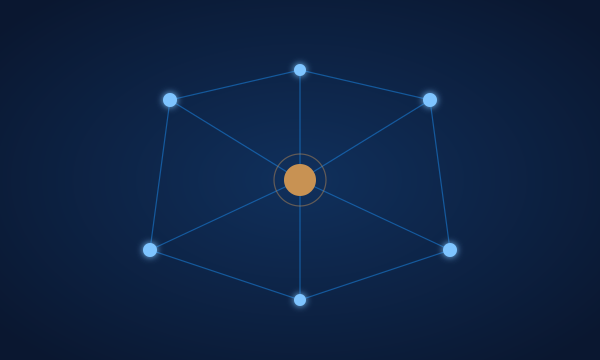

Sixteen organizations I actively support, across equity, public media, conservation, oceans, and civil liberties. The thesis behind where the capital goes.
I grew up with very little, alongside foster and adopted siblings. That household (and what it taught me about resourcefulness, generosity, and the difference between earning and entitlement) became the seed of everything that came after.
The thesis is simple: build companies that move the world forward, sell them, and recycle the proceeds into more founders and into public institutions that don't have a profit motive. The organizations below aren't a portfolio in the financial sense: they're where the proceeds of the building work end up.
Read About the Personal Quests →
Each organization carries the same standard: rigorous, independent, accountable, working at the scale where individual donations actually change outcomes.
Medical aid where it's needed most: independent, neutral, impartial. Shows up to conflict zones, epidemics, and natural disasters when other institutions can't or won't.
Realizing the promise of the Bill of Rights for all, in court and in public, one case at a time.
The certification partner that audits my environmental giving, verifying that pledged donations actually reach the work. The audit on top of the audit.
Altruistic Capitalism is not a vibe. It's a rubric: three principles that filter every organization on this page, and that I use when founders and family offices ask how I think about giving.
An active portfolio applying operator capital and the lifecycle framework, deal by deal.
Explore →Everything on this site feeds the same seven-phase system: see how it applies to what you're building.